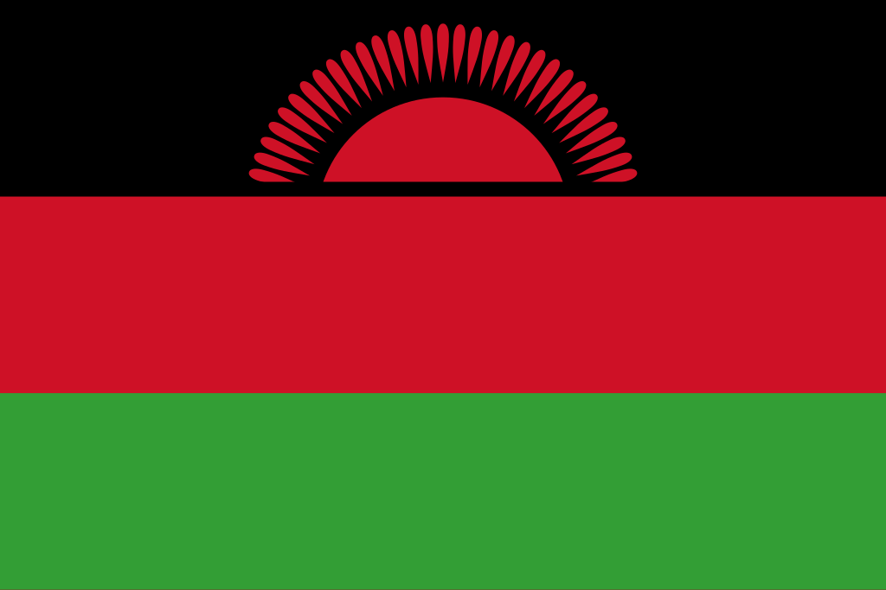

Malawi
 O Malawi, oficialmente República do Malawi, é um país localizado no sudeste da África, sem saída para o mar, mas com grande parte de seu território dominado pelo imenso Lago Malawi (também chamado Lago Niassa). Com área de cerca de 118 mil km², o país faz fronteira com Tanzânia, Zâmbia e Moçambique. Sua capital é Lilongwe, embora Blantyre seja o principal centro econômico e comercial. O Malawi possui uma população de aproximadamente 20 milhões de habitantes, composta majoritariamente por grupos étnicos bantu, como os chewa, yao, tumbuka e ngoni, com forte diversidade cultural e linguística. Apesar de ser um dos países menos desenvolvidos economicamente do mundo, o Malawi é conhecido como “o coração quente da África” devido à hospitalidade de seu povo. A economia é baseada principalmente na agricultura, com destaque para o cultivo de tabaco, chá, milho e café, além da pesca no Lago Malawi. O país enfrenta desafios ligados à pobreza, à saúde pública e às mudanças climáticas, mas também possui um patrimônio cultural e natural de grande relevância para a África.
História
A história do Malawi remonta a comunidades agrícolas e pesqueiras estabelecidas há milhares de anos, formadas por povos de origem bantu que migraram para a região por volta do século X. Esses grupos fundaram reinos e sociedades locais, entre os quais se destacou o Império Maravi, do qual deriva o nome atual do país. O Império Maravi floresceu entre os séculos XV e XVIII, com forte produção agrícola e comércio, incluindo trocas com povos árabes e portugueses da costa do Índico. No entanto, no século XIX, a região sofreu com o tráfico de escravizados, organizado por comerciantes árabes e swahilis, além de pressões coloniais europeias.
No final do século XIX, o território foi colonizado pelos britânicos, passando a ser conhecido como Niassalândia (Nyasaland), em referência ao Lago Niassa. A colonização trouxe profundas transformações econômicas e sociais, com introdução de plantações agrícolas para exportação e deslocamento de populações locais. O movimento nacionalista ganhou força após a Segunda Guerra Mundial, liderado por figuras como Hastings Kamuzu Banda, que se tornou o primeiro presidente do país. O Malawi conquistou a independência em 1964, rompendo com o domínio britânico, e Banda estabeleceu um regime de partido único que durou até 1994. A partir daí, o país iniciou sua trajetória democrática, com eleições multipartidárias e alternância de poder, apesar de crises econômicas e desafios sociais.
Cultura
A cultura do Malawi é marcada pela diversidade étnica e pela convivência de diferentes tradições. O povo chewa é o grupo mais numeroso, conhecido pela dança gule wamkulu, declarada Patrimônio Cultural Imaterial da Humanidade pela UNESCO, que combina espiritualidade, música e máscaras rituais. Outros grupos, como os yao e tumbuka, também possuem expressões culturais próprias, incluindo músicas tradicionais, danças e narrativas orais. A religião exerce papel central, com predominância do cristianismo (católicos e protestantes), embora o islã também seja presente, especialmente entre os yao.
A música contemporânea do Malawi mistura ritmos locais com influências africanas e ocidentais, sendo parte importante do cotidiano e das celebrações. A gastronomia é simples e baseada em ingredientes como milho, mandioca, peixe e verduras, sendo o prato mais típico a nsima, uma papa de milho consumida com molhos e acompanhamentos. As línguas oficiais são o inglês e o chichewa, mas há grande variedade de idiomas locais que refletem a multiplicidade étnica. Nas artes visuais, são comuns esculturas em madeira e cestos trançados, muitas vezes voltados ao turismo e à preservação cultural. A hospitalidade e a vida comunitária são traços fortes da identidade malawiana, razão pela qual o país é conhecido por sua calorosa receptividade.

Clima
O Malawi apresenta um clima tropical, moderado pela altitude, já que boa parte do território é composta por planaltos e vales elevados. As temperaturas variam entre 20°C e 30°C, com maiores variações conforme a região e a estação. O ano se divide basicamente em duas estações: a estação chuvosa, que vai de novembro a abril, marcada por precipitações intensas e importantes para a agricultura, e a estação seca, de maio a outubro, caracterizada por clima mais fresco e ensolarado. O Lago Malawi influencia fortemente o clima local, criando microclimas e contribuindo para a umidade da região leste. Essa diversidade climática favorece a produção agrícola, mas também expõe o país a secas periódicas e enchentes, desafios que afetam a segurança alimentar e a vida das populações rurais.
Biodiversidade
A biodiversidade do Malawi é notável, especialmente devido ao Lago Malawi, que é um dos maiores reservatórios de água doce da África e abriga mais de mil espécies de peixes, a maioria endêmica, incluindo os famosos ciclídeos, muito procurados para aquários em todo o mundo. Esse lago é considerado um dos ecossistemas aquáticos mais diversos do planeta. Além do lago, o país possui savanas, planaltos e áreas montanhosas que abrigam uma rica variedade de fauna e flora, incluindo elefantes, hipopótamos, crocodilos, búfalos, leopardos e várias espécies de aves.
Para proteger esse patrimônio natural, o Malawi conta com parques nacionais e reservas, como o Parque Nacional de Liwonde, o Parque Nacional de Nyika e o Parque Nacional de Kasungu. Esses espaços são importantes para a preservação da fauna e para o ecoturismo, que tem crescido como setor econômico. Entretanto, a biodiversidade enfrenta ameaças como desmatamento, caça ilegal e pressões populacionais sobre os recursos naturais. Apesar disso, esforços governamentais e internacionais têm buscado equilibrar o desenvolvimento econômico com a conservação, promovendo práticas de turismo sustentável e educação ambiental.


Cidades
As cidades do Malawi refletem sua estrutura econômica e social, com centros urbanos que crescem ao redor da agricultura, do comércio e de serviços básicos. Lilongwe, a capital desde 1975, é o centro político e administrativo, localizada no centro do país, com infraestrutura em expansão e funções governamentais concentradas. Blantyre, por outro lado, é a maior e mais dinâmica cidade, considerada o coração econômico, abrigando bancos, indústrias e um comércio ativo. Outra cidade importante é Mzuzu, localizada no norte, que desempenha papel estratégico na agricultura e no comércio regional.
As áreas urbanas do Malawi contrastam com o cenário rural, já que mais de 80% da população vive em vilarejos e comunidades agrícolas. Mesmo assim, as cidades vêm crescendo rapidamente, impulsionadas pelo aumento populacional e pela busca por melhores condições de vida. As principais cidades também concentram universidades, hospitais e mercados, tornando-se centros de modernização e de intercâmbio cultural no país. Lilongwe, Blantyre e Mzuzu simbolizam, portanto, os pilares da organização urbana e econômica do Malawi, mantendo vínculos estreitos com as tradições rurais que ainda sustentam a maior parte da população.